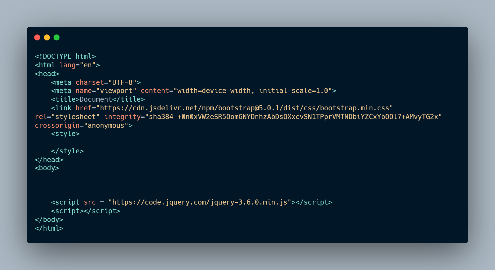

Написання сайтів на швидкість
Сьогодні я вирішив перевірити свої вміння в програмуванні і написати сайт-візитку на швидкість, а іменно за 10 хв
Я можу собі підготувати робочу область, тому я підключив bootstrap та jquery щее відкрив такі сайти як: color hunt і uigradients
На сайті буде:
- Опис людини
- + його робіт
- форма зворотнього зв'язку (не робоча)
У мене був стартовий код і виглядав він так:

І я починаю писати сайт
- 22 секунди і була створена шапка
- 37 секунди і вже біла інформація про людину (інформація була зроблена за допомогою lorem impstum)
- 3.27 хвилин і був зроблений пункт + робіт людини
- 9.34 хвилин сайт було закінчено
Кінцеву версію сайту я трішки дороблю і викладу у статті з шаблонами для сайтів